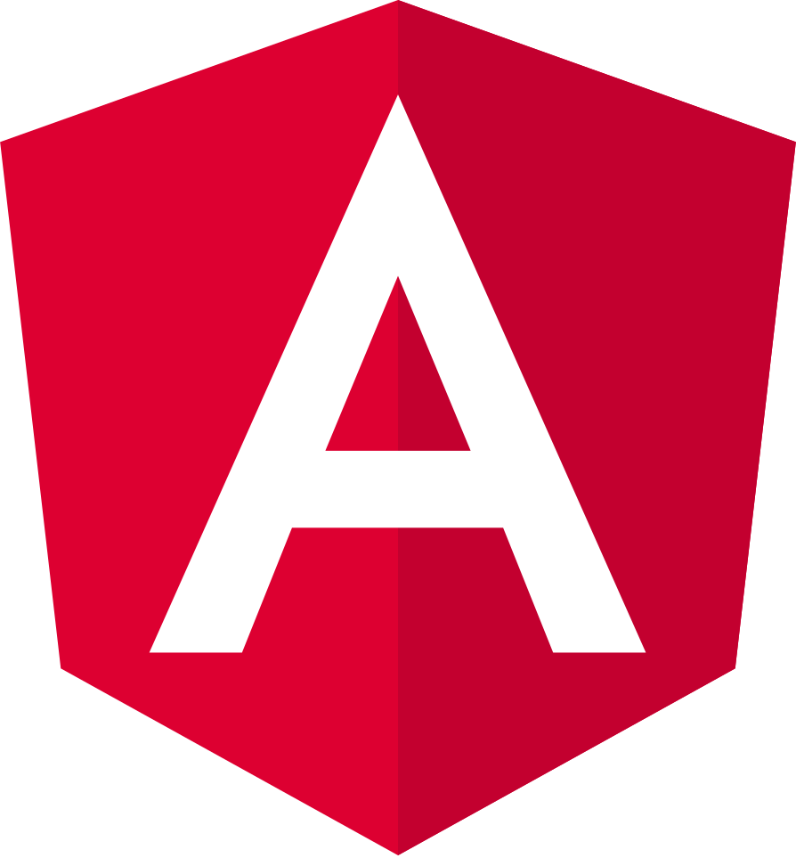

Introduction
Web development refers to the overall process of creating websites or web applications, including the project's design, layout, coding, content creation, and functionality. It involves using a combination of programming languages, tools, and frameworks to bring a website or web application to life.
Web development can be broken down into two main categories: front-end development and back-end development. Front-end development focuses on the user interface and user experience of a website, while back-end development focuses on the server-side logic and database management that powers the website.
The Front-end Languages are:
HTML
HyperText Markup Language (HTML) is the standard markup language for documents designed to be displayed in a web browser. It defines the content and structure of web content. It is often assisted by technologies such as Cascading Style Sheets (CSS) and scripting languages such as JavaScript.
Here is some example HTML code:
<!DOCTYPE html>
<html>
<head>
<title>Page Title</title>
</head>
<body>
<h1>This is a Heading</h1>
<p>This is a paragraph.</p>
</body>
</html>
<h1>This is a smaller Heading</h1>
<p>This is another paragraph.</p>
CSS
Cascading Style Sheets (CSS) is a style sheet language used for describing the presentation of a document written in a markup language such as HTML. CSS describes how elements should be rendered on screen, on paper, in speech, or on other media.
Here is some example CSS code:
body {
background-color: lightblue;
}
h1 {
color: white;
text-align: center;
}
p {
font-family: verdana;
font-size: 20px;
}
h1 {
color: blue;
text-align: center;
}
p {
font-family: verdana;
font-size: 20px;
}
JavaScript
JavaScript is a high-level, interpreted programming language that conforms to the ECMAScript specification. It is a programming language that is characterized as dynamic, weakly typed, prototype-based, and multi-paradigm.
Here is some example JavaScript code:
document.getElementById("demo").innerHTML = "Hello JavaScript";
function myFunction() {
document.getElementById("demo").innerHTML = "Paragraph changed.";
}
Frameworks
Frameworks are pre-written code libraries that help developers build websites and web applications more quickly and efficiently. They provide a foundation of reusable code, components, and tools that can be used to streamline the development process.
Some popular front-end frameworks include:
- Bootstrap
- React
- Angular 
Backend Development Languages
Backend development languages are used to create the server-side logic and database management that powers a website or web application. These languages are responsible for processing user input, interacting with databases, and generating dynamic content.
Some popular backend development languages include:
- Python
- Java
- PHP
- Ruby
APIs
Application Programming Interfaces (APIs) are sets of rules and protocols that allow different software applications to communicate with each other. They define the methods and data formats that applications can use to request and exchange information.
Some common types of APIs include:
Conclusion
Web development is a complex and multifaceted field that requires a diverse set of skills and knowledge. By mastering the languages, frameworks, and tools used in web development, you can create dynamic and engaging websites and web applications that provide value to users and businesses alike.